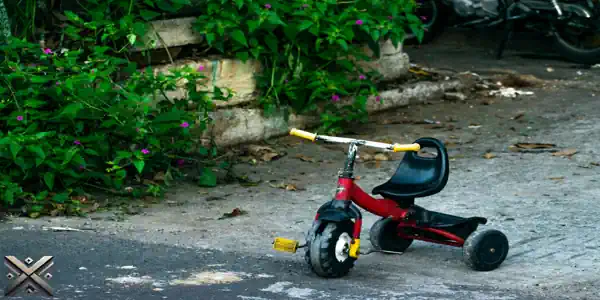
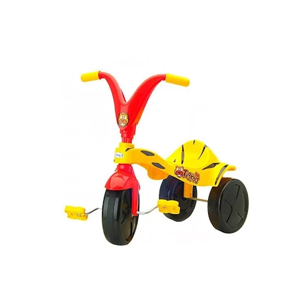
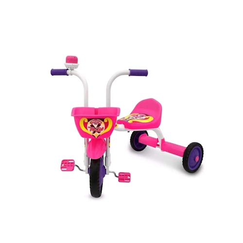
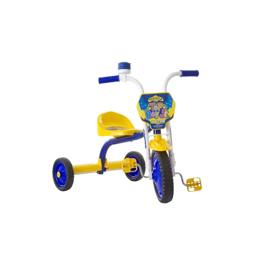
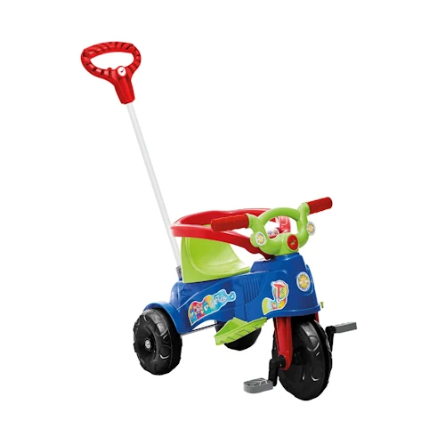
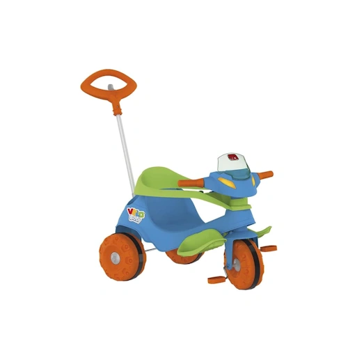

Quer comprar um triciclo infantil que combine diversão e desenvolvimento para seu filho, mas não sabe qual escolher? Para ajudar, realizamos diversos testes e selecionamos os cinco melhores triciclos infantis do mercado em 2025. Um triciclo auxilia no desenvolvimento motor e cognitivo das crianças, além de proporcionar momentos de lazer e socialização.
Escolher o modelo ideal depende de fatores como idade da criança, segurança, conforto e durabilidade. Para tornar sua decisão mais fácil, confira abaixo nossa seleção detalhada e descubra qual triciclo atende melhor às suas necessidades.

Os triciclos infantis são muito mais do que simples brinquedos. Eles são ferramentas essenciais para o desenvolvimento da coordenação motora, do equilíbrio e da noção de espaço das crianças. Entre os modelos mais populares, destacam-se os triciclos com pedal e os triciclos com empurrador, cada um com características pensadas para diferentes idades e necessidades.
Esse modelo é ideal para crianças que já conseguem pedalar sozinhas. Com um sistema de pedais na roda dianteira, ele permite que os pequenos desenvolvam independência e força nas pernas enquanto exploram o ambiente ao seu redor. Muitos triciclos com pedal vêm com assento ergonômico, cinto de segurança e até acessórios como buzinas e cestinhas para deixar a brincadeira ainda mais divertida.
Projetado para crianças menores, o triciclo com empurrador conta com uma haste traseira para que os pais possam conduzi-lo. Esse modelo geralmente inclui apoio para os pés, capota retrátil para proteção contra o sol e um sistema de freios que garante mais segurança. À medida que a criança cresce, alguns triciclos permitem remover o empurrador, transformando-se em um modelo tradicional.
Se a criança ainda não tem força ou coordenação suficiente para pedalar, o modelo com empurrador é a melhor opção. Já para os pequenos que adoram explorar por conta própria, o triciclo com pedal é uma escolha perfeita. Há ainda modelos 2 em 1, que acompanham o crescimento da criança, oferecendo mais versatilidade e durabilidade. Independentemente da escolha, um triciclo sempre será sinônimo de aprendizado e diversão!

Se você busca um triciclo acessível e de qualidade, o Xalingo Tigrão é uma ótima opção. Feito com estrutura de plástico resistente, ele traz adesivos decorativos que permitem personalização, tornando a brincadeira ainda mais divertida. Indicado para crianças acima de 2 anos, auxilia no desenvolvimento da coordenação motora, equilíbrio e atenção. Seu design colorido chama a atenção dos pequenos, incentivando o uso contínuo. Além disso, sua estrutura leve facilita o transporte e armazenamento. É um ótimo modelo para quem deseja um brinquedo seguro e durável sem gastar muito.
Faixa de preço: R$ 105

O Ultra Bike Top Girl é ideal para meninas que querem um triciclo bonito e confortável. Possui assento ajustável, manoplas antiaderentes e pedais ergonômicos que tornam o pedalar mais fácil. Construído em aço, suporta crianças de até 21 kg e 112 cm de altura. Além disso, vem com uma buzina e um design exclusivo para meninas. O modelo apresenta uma estrutura robusta, garantindo maior durabilidade e resistência. Seus pedais anatômicos ajudam no desenvolvimento motor da criança, tornando o aprendizado da pedalada mais intuitivo e eficiente. Com um design moderno, este triciclo se destaca entre as opções femininas do mercado.
Faixa de preço: R$ 194

Para os meninos, o Ultra Bike Top Boy é uma excelente escolha. Colorido e interativo, esse triciclo conta com assento ajustável, buzina e manoplas antiaderentes. Fabricado em aço resistente, suporta até 21 kg e possui pedais ergonômicos que facilitam o uso. Indicado para crianças a partir de 18 meses, auxilia no desenvolvimento da autonomia e coordenação motora. Sua estrutura reforçada permite um uso prolongado, garantindo segurança mesmo em brincadeiras mais agitadas. Além disso, seu design atrativo motiva as crianças a se exercitarem e desenvolverem habilidades motoras essenciais para seu crescimento saudável.
Faixa de preço: R$ 208

Se você busca um triciclo com empurrador, o Calesita Ta te tico é a melhor escolha. Adaptável às diferentes fases da criança, pode ser usado desde os 12 meses na função passeio e a partir dos 24 meses na função pedal. Com aro de proteção e apoio de pés removível, oferece segurança e conforto. Além disso, acompanha suporte para bolsa e um design moderno. Esse modelo se destaca pela sua versatilidade, permitindo que os pais tenham total controle nos primeiros meses de uso, enquanto a criança desenvolve habilidades motoras gradualmente. Sua estrutura ergonômica oferece conforto adicional para a criança, tornando os passeios mais agradáveis e seguros.
Faixa de preço: R$ 193

O grande destaque da lista é o Bandeirante Velobaby G2, um triciclo 2 em 1 que combina praticidade e diversão. Possui haste direcionável para os pais conduzirem, além de cercado de proteção e apoio para os pés. Quando a criança estiver pronta, pode pedalar livremente, transformando-o em um triciclo convencional. Conta ainda com rodas antiderrapantes, assento anatômico e acessórios como suporte para garrafa e painel de atividades. Esse modelo se diferencia pela durabilidade e conforto, sendo uma opção perfeita para quem deseja acompanhar o crescimento da criança com um único produto. Além disso, seu design moderno e cores vibrantes fazem dele um dos triciclos mais atrativos do mercado.
Faixa de preço: R$ 355
A escolha do triciclo ideal depende das necessidades da criança e das preferências dos pais. Agora que você conhece os melhores modelos de 2025, compartilhe este artigo com quem também está em busca de um triciclo infantil perfeito! Independentemente do modelo escolhido, é importante priorizar a segurança e o conforto da criança. Os triciclos apresentados acima foram testados e aprovados, garantindo qualidade e diversão. Se você já adquiriu um desses modelos, conte-nos sua experiência nos comentários e ajude outros pais a fazerem a melhor escolha.